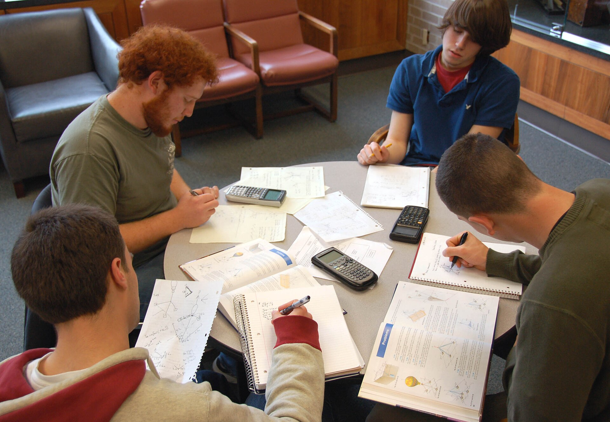

DICAS DE ESTUDO
Concentração nos estudos
Estratégias para preparar o ambiente, lidar com distrações e voltar à tarefa sem exigir foco perfeito.
Introdução
Concentração é a capacidade de direcionar a atenção por algum tempo; ela varia conforme o sono, o interesse, o ambiente e a dificuldade da tarefa. Distrações acontecem com todo mundo. Em vez de se culpar, observe o que interrompe seu foco e faça mudanças pequenas para facilitar o retorno.
1. Prepare o ambiente e diminua distrações do celular
Antes de começar, deixe à mão o que será usado: caderno, livro, água e uma lista curta da tarefa. Organize a mesa o suficiente para trabalhar, sem esperar que o espaço fique perfeito. Se houver barulho, tente mudar de lugar, fechar a porta ou combinar um período de menos interrupções, quando isso for possível.
Coloque o celular no silencioso e fora do alcance da mão; ative o modo foco ou deixe apenas contatos importantes autorizados. Se precisa dele para estudar, feche aplicativos que não serão usados e abra somente o material necessário. Um temporizador físico pode evitar consultas repetidas ao aparelho.

2. Evite trocar de atividade o tempo todo
Comece definindo uma ação específica e pequena: “resolver as questões 1 a 4” é mais claro do que “estudar química”. Mantenha uma folha para anotar pensamentos que surgirem, como uma mensagem que precisa enviar; volte a eles depois do bloco. Ao terminar uma etapa, registre onde parou para facilitar a retomada.
Se a tarefa for longa, divida-a em partes. Alternar entre leitura, notificações, vídeos e exercícios costuma exigir um novo período de adaptação a cada troca. Reserve um momento planejado para mensagens e tarefas pessoais, em vez de responder a cada alerta.
3. Técnica Pomodoro e suas variações
Uma versão conhecida é trabalhar por 25 minutos e pausar por 5; após quatro ciclos, fazer uma pausa mais longa. O tempo não é regra universal: experimente blocos de 15, 30 ou 40 minutos conforme a idade, o tipo de tarefa e o seu ritmo. Para uma leitura difícil, um bloco menor pode ser melhor; para resolver uma lista, talvez seja confortável um bloco maior.
Durante o bloco, trabalhe em uma única tarefa. Na pausa curta, levante, alongue-se, beba água ou descanse os olhos. Evite iniciar algo que seja difícil interromper, como abrir uma sequência longa de vídeos. Se o temporizador tocar no meio de uma questão, anote o ponto em que está e decida se conclui o raciocínio ou faz a pausa.

4. Pausas produtivas e interrupções
Pausa não é outra tarefa escolar. Ela serve para recuperar energia. Caminhar um pouco, respirar, olhar para longe e se alongar são opções simples. Se alguém interromper, anote o próximo passo antes de sair; ao voltar, releia a anotação e retome dali. Combine com familiares um sinal ou horário de estudo quando isso for viável.
Algumas interrupções são importantes e não podem esperar. Nesse caso, pause o cronômetro e reorganize o bloco depois. O objetivo é ter flexibilidade, não obedecer a um relógio a qualquer custo.
5. O que fazer quando a mente está dispersa
Faça uma pausa breve e verifique necessidades básicas: cansaço, fome, sede, preocupação ou falta de clareza sobre a tarefa. Escreva a preocupação em uma frase e escolha o menor próximo passo, como ler um parágrafo ou fazer uma questão com consulta ao exemplo. Se a atividade parecer confusa, anote uma dúvida para perguntar ao professor ou colega.
Quando perceber que se distraiu, reconheça o fato sem se criticar e volte ao ponto combinado. O treino de concentração inclui retornar, não permanecer focado sem interrupções o tempo inteiro.

6. Hábitos que prejudicam o foco
- Estudar com notificações ativadas e muitas abas abertas.
- Planejar uma sessão longa sem água, pausa ou objetivo claro.
- Trocar de técnica a cada poucos minutos sem dar tempo para praticar.
- Confundir pausa com culpa e insistir quando já não consegue compreender.
- Usar a rotina de outra pessoa como padrão obrigatório.
Resumo
Defina uma tarefa concreta, prepare o necessário, silencie notificações quando puder e experimente blocos de foco ajustados ao seu ritmo. Faça pausas reais, planeje como lidar com interrupções e retome com gentileza quando a atenção escapar.
Conclusão
Não é preciso esperar o dia perfeito para começar. Um bloco curto, uma mesa funcional e uma tarefa bem definida já ajudam. Teste uma estratégia por alguns dias, observe o que funciona para você e ajuste sem transformar concentração em cobrança.